뷰티·미용 의료기기 브랜드 ‘쿨소닉’ — 도심 랜드마크 전광판과 버스·지하철을 묶은 미디어믹스
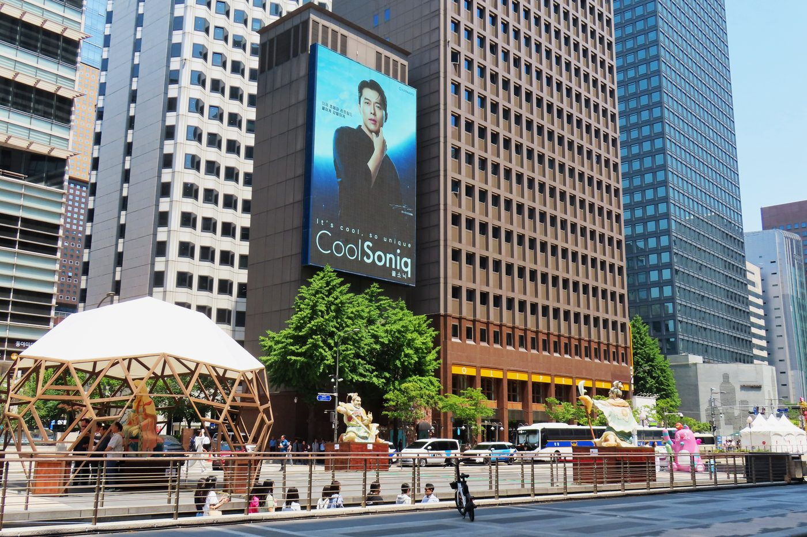
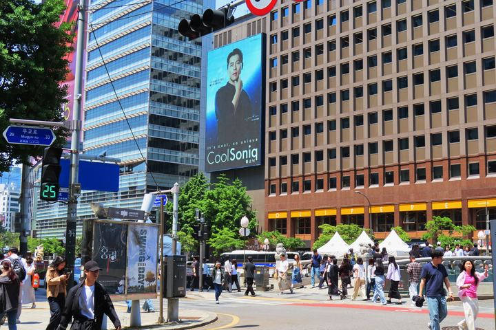
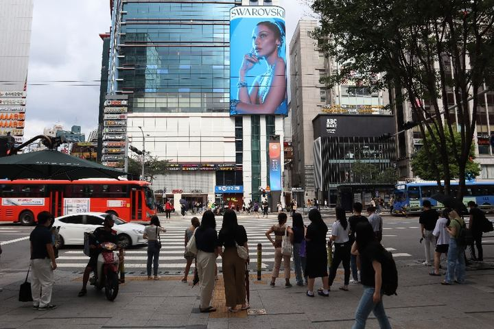
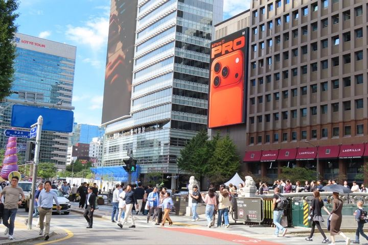
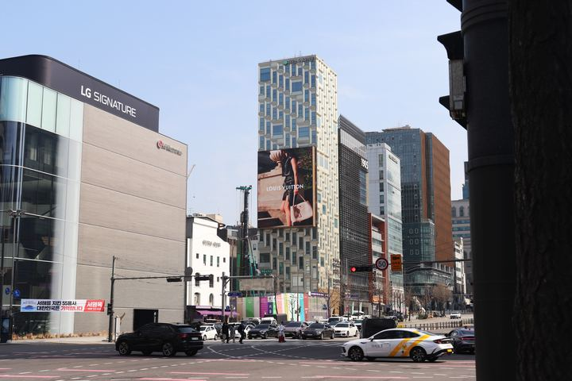
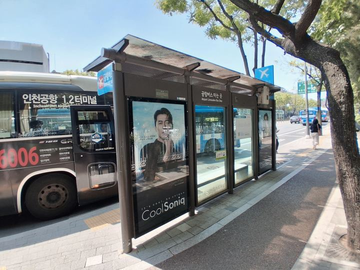
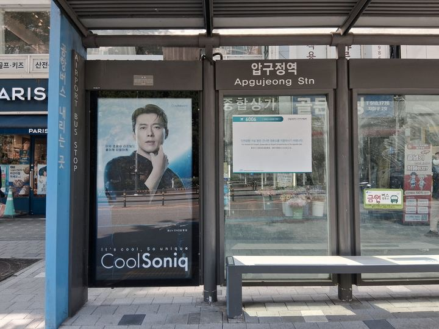
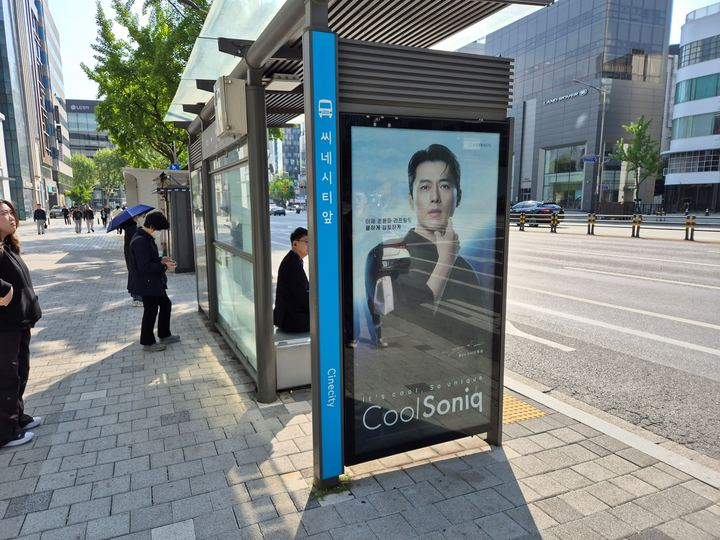
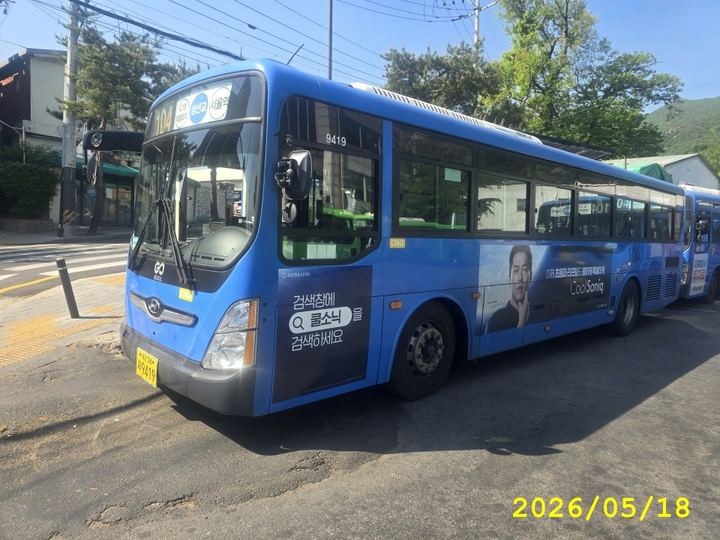
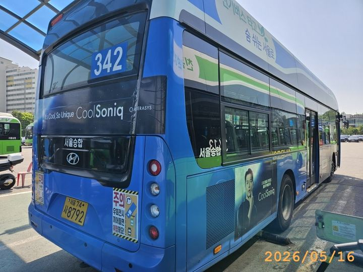
미용·에스테틱 의료기기 브랜드 쿨소닉(CoolSoniq)의 옥외광고 집행 사례입니다. 서울 강남·광화문 등 핵심 상권의 랜드마크 전광판(DOOH)으로 브랜드 인지도를 끌어올리고, 버스쉘터·버스 외부·지하철을 더해 같은 소비자에게 반복 노출을 만든 멀티 포맷 미디어믹스입니다. 서울에서 시작해 부산·대구까지 확장했습니다.
캠페인 배경·목표
이 업종이 이 매체를 고른 이유
미용·에스테틱 의료기기는 고관여·고가 시술 특성상, 한순간의 인지보다 ‘프리미엄 브랜드’라는 인상과 반복 노출이 구매 결정에 크게 작용합니다. 그래서 강남·압구정·광화문처럼 고소득·트렌드 상권의 랜드마크 전광판으로 브랜드 격을 세우고, 출퇴근·생활 동선의 버스쉘터·버스·지하철로 같은 얼굴을 반복해 만나게 했습니다. 특히 피부과·클리닉이 밀집한 강남권을 중심에 둬, 인지에서 실제 상담·내원으로 이어지는 지역까지 함께 겨냥한 구성입니다.
핵심 상권 도달 규모
| 집행 상권 | 일평균 유동인구 | 주요 지하철(월 승하차) |
|---|---|---|
| 강남역·강남대로 | 약 357,552명 | 강남역 2호선 462만 |
| 광화문 청계광장 | 약 250,960명 | 광화문역 5호선 204만 |
| 명동·을지로입구 | 약 254,317명 | 을지로입구역 2호선 295만 |
| 여의도 | 약 246,276명 | 여의도역 5호선 166만 |
| 압구정·도산대로 | 약 198,092명 | 압구정역 3호선 185만 |
데이터 출처 — 일평균 유동인구: 소상공인 상권정보(통신사 데이터) · 지하철 월 승하차: 서울 열린데이터광장. 상권 반경·주요 역 기준 참고치입니다.
집행 매체
- 랜드마크 전광판 광화문 청계광장 · 강남대로 · 학동사거리 · 명동 · 여의도 등 서울 핵심 상권 대형 LED(DOOH)
- 버스쉘터 압구정·강남 일대 가로변 쉘터 미디어
- 버스 외부 서울·부산·대구 시내버스 노선 래핑(30대+)
- 지하철 주요 역 스크린도어·역사 매체
집행 성과
자주 묻는 질문
미용·에스테틱 의료기기는 어떤 옥외광고가 효과적인가요?
고관여·고가 시술이라 ‘프리미엄 브랜드’ 인상과 반복 노출이 중요합니다. 강남·압구정·광화문 등 고소득 상권의 랜드마크 전광판(DOOH)으로 브랜드 격을 세우고, 버스쉘터·버스 외부·지하철로 출퇴근·생활 동선에서 반복 노출하는 미디어믹스가 효과적입니다.
옥외광고 미디어믹스는 어떻게 구성하나요?
인지도를 만드는 대형 랜드마크 전광판과, 반복 도달을 만드는 교통 매체(버스쉘터·버스 외부·지하철)를 함께 씁니다. 같은 상권·동선에 겹쳐 배치하면 도달(Reach)과 빈도(Frequency)를 동시에 높일 수 있습니다.
우리 업종·예산에 맞는 매체는 어떻게 찾나요?
광고플레이 지도에서 지역·예산·매체 유형으로 검색하고, 관심 매체를 담아 한 번에 상담·견적을 받을 수 있습니다. 업종·목표에 맞는 미디어믹스는 상담 시 제안드립니다.
본 사례는 집행 매체·위치 예시이며 광고주 정보는 비공개입니다. 브랜드·업종에 맞는 매체 구성은 상담 시 제안드립니다.
글로벌 플라스틱 이슈 공익 캠페인 ‘Cap Plastic Production’ — 부산·서울 랜드마크·역사 매체 집행
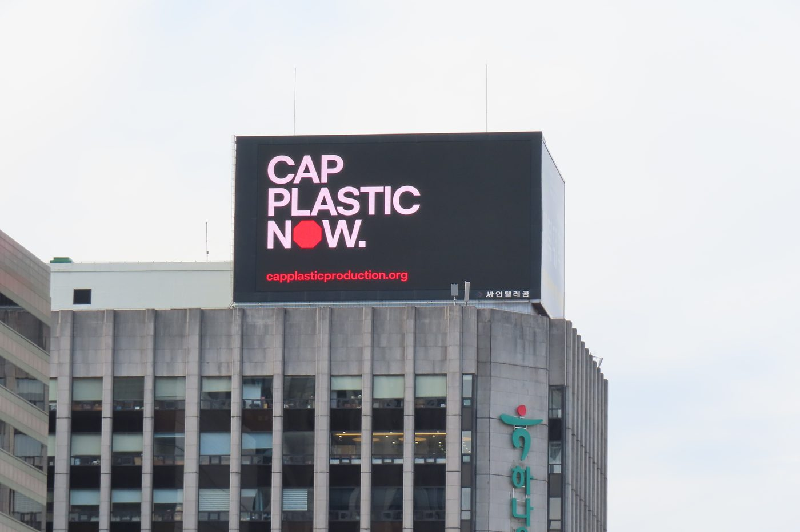
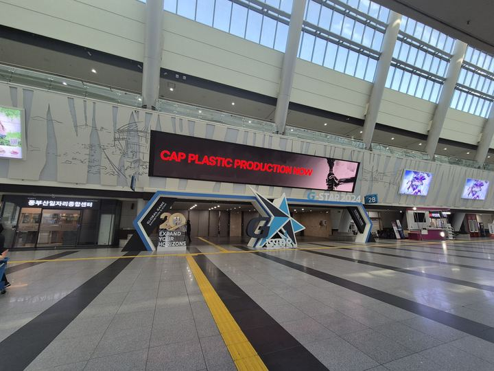
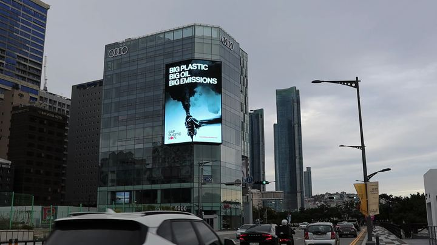
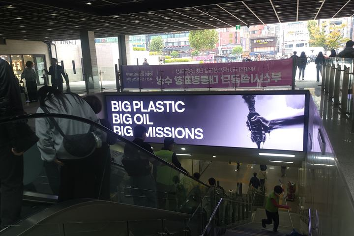
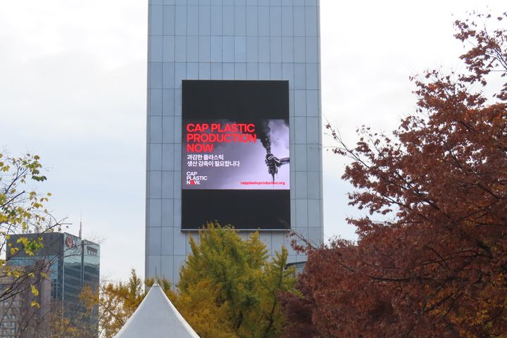
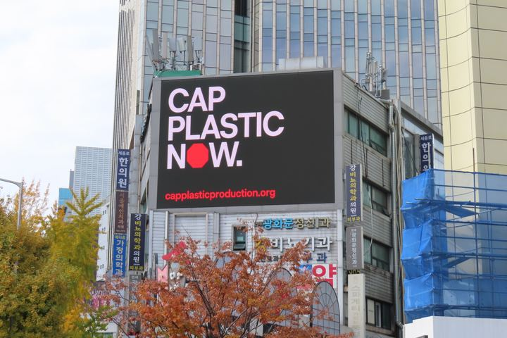
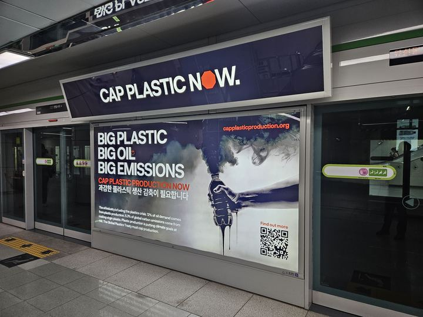
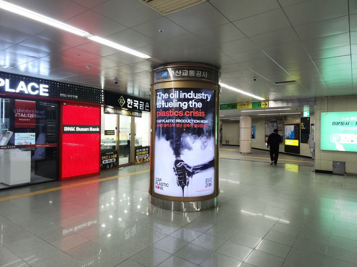
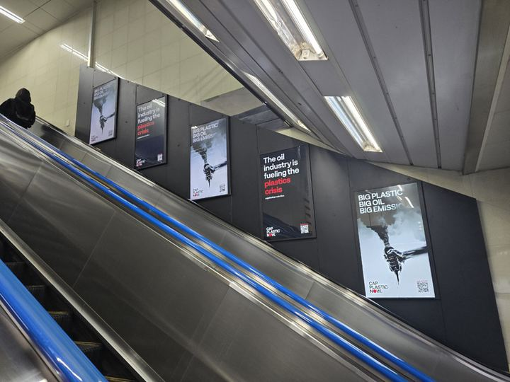
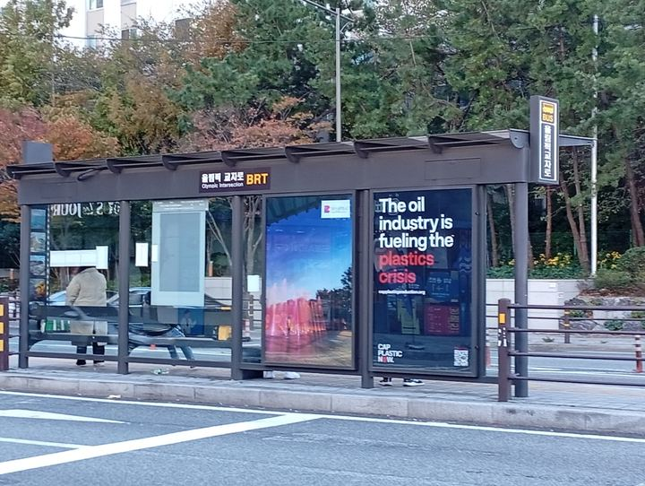
글로벌 플라스틱 감축을 알리는 공익 캠페인 Cap Plastic Production의 옥외광고 집행 사례입니다. 국제 환경 논의가 집중된 부산(BEXCO·센텀시티역·해운대·KTX 부산역)과 수도 서울(광화문·시청)의 랜드마크 LED와 역사 디지털 매체에 메시지를 집중 노출했습니다.
캠페인 배경·목표
이 업종이 이 매체를 고른 이유
환경·공익 캠페인은 특정 소비자가 아니라 대중과 정책 여론을 넓게 움직여야 합니다. 그래서 사람이 모이는 국제 행사장·교통 허브·랜드마크에 집중했습니다. 부산에서는 전시·컨벤션(BEXCO)과 센텀시티역·KTX 부산역 같은 대규모 유동 지점의 역사 디지털·스크린도어로 반복 노출을 만들고, 서울에서는 광화문·시청 등 상징적 도심 랜드마크로 메시지의 무게를 더했습니다. 국내외 방문객과 여론 형성층에 동시에 도달하는 구성입니다.
집행 매체
- 랜드마크 LED 해운대 유카로빌딩 · 광화문 코리아나·다정·적선빌딩 · BEXCO LED
- 역사 디지털 센텀시티역 디지털 패키지·라이트박스·스크린도어(PSD) · KTX 부산역 캐노피 LED · 서울시청 PSD
- 버스쉘터 BEXCO · 광화문 공항버스쉘터
집행 성과
본 사례는 집행 매체·위치 예시이며 광고주 정보는 비공개입니다. 브랜드·목적에 맞는 매체 구성은 상담 시 제안드립니다.
블로그
네이버 블로그 · 광고플레이
실제 집행 후기와 캠페인 사례, 매체 신규 오픈 소식을 블로그에서 확인하세요.